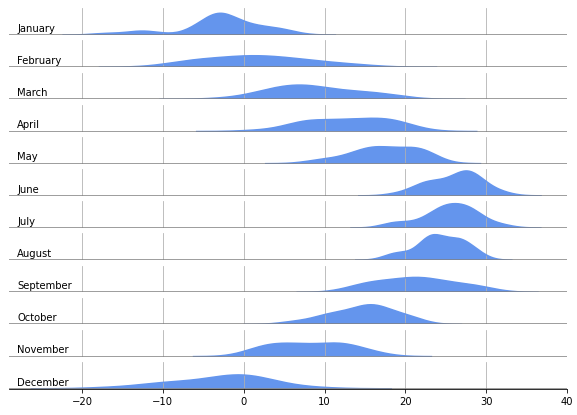

- 시간의 흐름에 따른 분포 추세 변화를 보여줍니다.
- matplotlib 혼자만으로는 힘듭니다. seaborn의 도움을 받아봅시다.
- pandas의 도움을 받을 수도 있습니다.
Claus Wilke, “데이터 시각화 교과서”, 영문판(Free)
Colin Ware “데이터 시각화, 인지과학을 만나다”
White Paper-Principles of Data Visualization-What we see in a Visual
1. 전주의 처리preattentive processing
wikipedia: pre-attentive processing
Seminal InfoVis Paper: Treisman, Preattentive Processing
Treisman, “Preattentive processing in vision”, Computer Vision, Graphis, and Image Processing, 31, 157 (1985)
Treisman and Gormican, “Feature analysis in early vision: Evidence from search asymmetries”, Psychological Review, 95, 15 (1988)
Focus Your Audience’s Attention
-
우리 눈은 주목
attention하기 전에 정보를 처리합니다.- 정신물리학
psychophysics은 인간의 감각 측정에 물리학적 방법을 적용한 기술입니다. - Anne Treisman은 1985년 기념비적인 논문을 출판합니다.
- 어떤 물체가 사람의 관심을 끌고 쉽게 발견되는지에 대한 내용입니다.
- 정신물리학
-
어려운 말들이 갑자기 등장합니다. 예시를 통해 알아봅시다.
-
정답은 좌우 모두 14개 입니다.
- 오른쪽 그림이 왼쪽 그림보다 훨씬 헤아리기 좋습니다.
- 9만 골라서 굵은 글씨로 표시했기 때문에 찾기도 좋고,
- 무엇보다 혼동되기 쉬운 6, 8, 3과 헷갈리지 않습니다.
- 우리 뇌가 굵은 글씨를 따로 떼어서 처리하기 때문입니다.
-
Treisman을 비롯한 당시 연구자들은 눈길을 끄는 요소가 있음을 알았습니다.
- 이를 전주의 요소
preattentive attributes라고 하며, - 대상을 이렇게 만드는 것을 전주의 처리
preattentive processing라고 합니다. - 연구에 따르면 전주의 처리된 대상 식별엔 10 ms 미만이 걸리지만,
- 그렇지 않은 대상은 40 ms 이상이 걸렸다고 합니다.
- 이를 전주의 요소
-
전주의 요소의 예시로는 다음과 같은 것들이 있습니다.
-
우리는 이 중 움직임
motion을 사용해보려 합니다.
2. 분포distribution 시각화
Claus Wilke, “데이터 시각화 교과서”, 영문판(Free)
github: WeatherPredictPythonML
Weather Underground

- 어떤 데이터가 얼만큼 있는지 알고 싶을 때 분포를 그립니다.
- 18세기부터 시작된 히스토그램
histogram이 기본이고 - 매끄러워 보기 좋은 밀도 도표
density plot도 많이 쓰입니다.
- 18세기부터 시작된 히스토그램
2.1. 한 달치 일별 기온 분포 : histogram
-
한달치 일별 평균 기온 분포를 그려봅시다.
- 미국 Nebraska 주의 Lincoln 시 데이터를 사용하겠습니다.
- Weather Underground에서 API로 데이터를 가져올 수 있지만
- 편하게, 다운받아둔 데이터를 이용하겠습니다.
-
데이터를 읽어 2016년 것만 추립니다.
-
많은 column 중
meantempm이 일별 평균 기온입니다.
1 | %matplotlib inline |
- 1월 데이터만 선택해서 히스토그램을 그립니다.
1 | df_2016.reset_index(inplace=True) |
2.2. 한 달치 일별 기온 분포 : density plot
2.2.1. matplotlib + scipy : 이렇게 하지 마세요. 뒤에 쉬운 길 나옵니다.
- 분포 범위 -15℃ ~ 5℃, 최빈값 약 -2℃가 선명하게 보입니다.
- 그러나 거친 그림이 왠지 아쉽습니다. 밀도 도표는 예쁠 것 같습니다.
- matplotlib으로는 커널 밀도를 그리기 상당히 번거롭다는 것이 문제입니다.
1 | ## 1. Gaussian KDE 기능 불러오기 |
- 대역폭
bandwidth조정이라도 하려면 더 어렵습니다.
1 | ## 2.5. 대역폭 수정 |
2.2.2. matplotlib + pandas
- pandas에서 kde plot 한줄코딩을 지원합니다.
- 인자로
matplotlib.pyplot.Axes를 입력받기 때문에 사전 정의된 Axes에 넣을 수도 있습니다.
1 | fig, ax = plt.subplots(ncols=2, figsize=(8,4)) |
2.2.3. matplotlib + seaborn
- seaborn은 더 친절합니다.
- 한 줄에 histogram과 density plot을 함께 그릴 수 있습니다.
1 | import seaborn as sns |
2.3. 한 달치 일별 기온 분포 X 12달 : ridge plot
-
1년은 12달이므로 한 달치 일별 기온 분포를 12개 그려야 합니다.
- 단순히 12개를 나열하기보다,
- 한 달 한 달이 지나며 기온 분포가 어떻게 바뀌는지 보여주어야 합니다.
-
여러 분포 상태를 도표 하나에 시각화하기 위한 방법들이 있습니다.
- 통계적 분석결과를 담은 박스플롯
box plot - 밀도 함수를 이용한 바이올린 도표
violin plot - 밀도 함수를 순차적으로 늘어놓은 융기선 도표
ridge plot가 있습니다.
- 통계적 분석결과를 담은 박스플롯
-
이 중 융기선 도표는 시간의 흐름에 따른 변화를 보여주기에 좋습니다.
- 가로축을 데이터값으로 고정하고 세로축을 시간에 따라 배열하면,
- 시선이 위아래로 움직이며 자연스럽게 데이터값의 변화를 파악하게 됩니다.
- 데이터의 배열이 시간의 흐름과 동기화되어 시각적으로 빠르게 이해됩니다.

matplotlib과seaborn을 협력시켜 융기선 도표를 그려보겠습니다.
1 | # 모든 axes에 동일한 scale 적용 : sharex=True, sharey=True |
- 간단하게 융기선 도표가 그려졌지만 많이 아쉽습니다.
- 불필요한 인자들 (윤곽선, y값)이 많습니다. → 없앱시다.
- 월 이름이 숫자입니다. → 이름으로 바꿉시다.
- 그림들이 따로 놀고 있습니다. → 겹쳐줍시다.
2.3.1. 달 이름을 숫자에서 문자로 바꾸기
calendar모듈을 사용하면 간단하게 숫자를 영어로 바꿀 수 있습니다.
1 | import calendar |
2.3.2. 윤곽선 없애기, 눈금 넣기
- 지난 글의 예시를 따라 spines를 없애고 grid를 넣습니다.
- 그리고 없앤 하단 spine 대신 밝은 회색으로 기준선을 깔아줍니다.
- x축 눈금(tick)은 길이를 0으로 만들었고, y축 눈금은 완전히 제거했습니다.
- x축 눈금을 제거할 경우 격자(grid)가 생기지 않기 때문입니다.
1 | fig, axes = plt.subplots(nrows=12, figsize=(10,7), sharex=True, sharey=True) |

2.3.3. 밀도 함수 겹치기
-
밀도 함수를 겹치려면 다음과 같은 조건이 필요합니다.
- 위 axes의 하단이 아래 axes의 상단보다 낮게 있을 것
- axes의 배경이 투명해서 아래가 비쳐보일 것
- 밀도 함수의 윤곽선과 내부 색이 구분될 것
-
그리고, 다음과 같은 명령어로 구현됩니다.
fig.subplots_adjust(hspace=-0.5): fig에 속한 axes들을 절반 겹칩니다.ax.patch.set_alpha(0): axes의 배경을 투명하게 설정합니다.
비슷하게,fig.patch.set_alpha(0)를 하면 Figure도 투명해집니다.sns.kdeplot(color=, facecolor=): (line)color와 facecolor의 색을 따로 지정합니다.
-
코드에 적용하면 다음과 같습니다.
1 | fig, axes = plt.subplots(nrows=12, figsize=(10,7), sharex=True, sharey=True) |
2.3.4. 격자를 데이터 뒤로 옮기기
-
위 그림에서 분포를 가린 격자가 다소 거슬립니다.
- 각 axes의 격자는
zorder인자를 사용해서 분포 뒤로 보낼 수 있지만, - 아래 axes의 격자가 위 axes의 분포를 가리는 것은 막기 어렵습니다.
(방법을 찾지 못했습니다. 아시는 분 제보 부탁드립니다)
- 각 axes의 격자는
-
대안으로, grid 대신 xtick 위치에 수직선을 긋는 방법이 있습니다.
ax.get_xticks()로 x축 눈금 위치를 찾고- 거기에 지정된 높이의 막대기를 분포 그림 뒤에 그어줍니다.
-
이 부분을 포함한 전체 코드와 결과는 다음과 같습니다.
1 | fig, axes = plt.subplots(nrows=12, figsize=(10,7), sharex=True, sharey=True) |